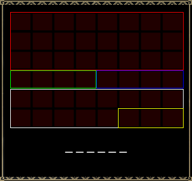
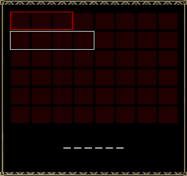

1. 퀘스트 보수칸


| 보수 종류 | 운기스킬 | 보수칸의 출현확률(32를 분모로 하는 분자의 값) | |||||||||
|---|---|---|---|---|---|---|---|---|---|---|---|
| 1 | 2 | 3 | 4 | 5 | 6 | 7 | 8 | 9 | 10 | ||
| 기본보수Ａ (기본 10칸의 퀘스트) | 격운 | 32 | 32 | 32 | 32 | 29 | 29 | 29 | 29 | 29 | 29 |
| 행운 | 32 | 32 | 32 | 32 | 26 | 26 | 26 | 26 | 26 | 26 | |
| 스킬 없음 | 32 | 32 | 32 | 32 | 22 | 22 | 22 | 22 | 22 | 22 | |
| 불운 | 32 | 32 | 32 | 32 | 16 | 16 | 16 | 16 | 16 | 16 | |
| 재난 | 32 | 32 | 32 | 32 | 8 | 8 | 8 | 8 | 8 | 8 | |
| 기본보수Ｂ (기본 8칸의 퀘스트) | 격운 | 32 | 32 | 32 | 29 | 29 | 29 | 29 | 29 | ||
| 행운 | 32 | 32 | 32 | 26 | 26 | 26 | 26 | 26 | |||
| 스킬 없음 | 32 | 32 | 32 | 22 | 22 | 22 | 22 | 22 | |||
| 불운 | 32 | 32 | 32 | 16 | 16 | 16 | 16 | 16 | |||
| 재난 | 32 | 32 | 32 | 8 | 8 | 8 | 8 | 8 | |||
| 서브 타겟A·B의 보수 | 격운 | 32 | 32 | 29 | 29 | ||||||
| 행운 | 32 | 32 | 26 | 26 | |||||||
| 스킬 없음 | 32 | 32 | 22 | 22 | |||||||
| 불운 | 32 | 32 | 16 | 16 | |||||||
| 재난 | 32 | 32 | 8 | 8 | |||||||
| 포획추가보수 | - | 32 | 32 | 22 | |||||||
| 부위파괴 보수 (1부위당) | - | 32 | |||||||||
| 기본보수 （연습퀘스트） | - | 32 | 24 | 16 | 8 | ||||||
먼저, 보수의 개수(칸 수)를 결정합니다. 위의 표는, 각 보수의 보수칸이 출현하는 확률입니다.
(한 시기까지는, 기본보수A는, 머스트 오더나 서브 타겟 없음의 퀘스트, 기본보수B는 서브 타겟 있음으로 나뉘어 있었습니다. 현재는 퀘스트마다 다릅니다)
수치는 32를 분모로 하는 분자의 값입니다. 따라서, 값이 32로 되어 있는 칸은 확실히 출현합니다.
가장 위의 기본보수를 예로 들면, 보수는 4개까지는 확실히 출현한다는 것입니다. 5개째 이후는 확률에 따라 출현하는지 여부를 결정합니다.
출현한다고 결정하면, 마찬가지로 6개째의 출현을 확률에 따라 결정합니다. 출현하지 않는다고 결정한 시점에서, 그 보수의 칸 수가 정해집니다.
※주의
·수렵단 푸기의 '꿀꿀 보수술이 발동했다.' 발동 시는 위 내용에 한하지 않고, 기본보수칸이 상한을 초과해 3열 모두(24칸)가 보수칸이 되는 경우가 있습니다.
·동일 수렵단원에 의한 PT(2~4명)가, 서로 다른 별명 칭호를 설정한 상태로 퀘스트에 나오면, '별명 칭호스킬(행운과 동등)'이 일정 확률로 발동합니다. (격운스킬 우선)
·초격운의 부적, 대격운의 부적을 소지하고 있거나, 어시스트 코스를 구입하고 있는 경우, 격운스킬과 동등한 효과가 있습니다.
·퀘스트의 보수에는 변경 불가 칸인 것이 있으며, 그 경우는 운기스킬 등에 관계없이, 지정분의 보수칸밖에 출현하지 않습니다.
위의 표대로, 운기스킬은 기본보수와 서브 타깃 달성보수의 칸 출현확률에 영향을 줍니다.
칸 수가 결정되면, 보수소재 목록 중에서 확률에 따라 추첨을 실시하여, 1칸째부터 순서대로 넣어갑니다.
퀘스트보수에는 확정아이템이 설정되어 있는 경우가 있으며, 반드시 1칸째만은 추첨이 아니라, 확정아이템이 들어갑니다.
마지막에, 각 보수를 아이템코드 순으로 정렬합니다.
또한, HC적라잔 수렵 시의 추가보수, HC 티켓, 각 무기의 혼은 그 후에 추가됩니다.
아래의 부적을 소지하고 있는 경우, 입수소재수가 늘어납니다.
·초격운의 부적: 50%의 확률로 입수소재가 2배가 됩니다.
·대격운의 부적: 15%의 확률로 입수소재가 2배가 됩니다.
대격운의 부적과 초격운의 부적은 병용이 가능합니다. 병용한 경우는, '초격운의 부적'의 운기스킬 '초격운'이 발동한 후, '대격운의 부적'의 운기스킬 '대격운'이 발동합니다
※주의
·연습 퀘스트의 경우, '아이템없음'이 선택되었을 때는, 거기서 추첨이 끝나고 이후의 추첨은 하지 않습니다.
·퀘스트의 보수에는 변경 불가 칸인 것이 있으며, 그 경우는 부적 스킬 등에 관계없이, 지정분의 보수 수밖에 입수하지 않습니다.